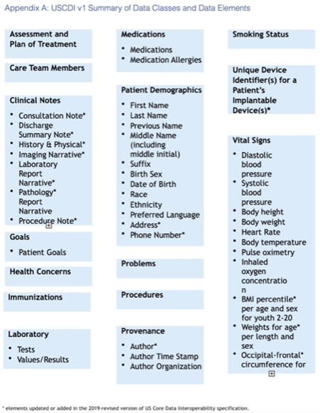

Part 2: USCDI and Associated Terminology
Background on Health Data Interoperability
Major health care reform changes in the past 30 years alongside technological advancements have driven the need for health data standards. The shift to value-based care (and reimbursement structures) fundamentally changed the way information needed to be exchanged between systems.
Healthcare data interoperability is the vision that a patient could access their own medical records (or the records of their dependents), and that a patient's care team (including doctors and nurses) could access those records across provider organizations. Interoperability envisions a system in which data could be shared and exchanged with other providers to assist in an individual’s care by providing a complete longitudinal record of care across providers, and enhance broader public health goals. Healthcare data interoperability has been an ongoing objective and is still not yet a fully realized goal.
History of Regulation
The Office of the National Coordinator for Health Information Technology (ONC) has been a critical driver of interoperability efforts.
Learn more about ONC
- The Office of the National Coordinator for Health Information Technology (ONC) was created under the George W. Bush Administration in 2004. ONC is charged with synchronizing health IT in the U.S. health care sector.
Source: https://www.techtarget.com/searchhealthit/definition/ONC. - One of the first endeavors of ONC was the planning and design of a National Health Information Network (NHIN) to facilitate the exchange of electronic health information among providers and Health Information Exchange (HIE) entities. The continued vision is an interconnected healthcare ecosystem.
- For more information about ONC check here: https://www.healthit.gov/
Efforts at interoperability were accelerated by the passing of the Health Information Technology for Economic and Clinical Health (HITECH) Act
More on the HITECH Act
-
As part of the larger American Recovery and Reinvestment Act of 2009, the HITECH Act authorized CMS to establish the Medicare and Medicaid EHR Incentive Programs. These programs paid approximately $35 billion in incentive payments to eligible professionals, hospitals, and critical access hospitals to adopt, implement, upgrade, and demonstrate the use of certified EHR technology (CEHRT) that met certain standards for ‘Meaningful Use’ (MU).
-
In 2011, the MU component of HITECH was implemented to expand the adoption of health information technology (HIT) and facilitate the use of EHRs.
-
The reporting requirements for obtaining MU designation involved the ability of an EHR to perform such functions as generating problem lists, exchanging patient clinical data, or e-prescribing.
The Medicare Access and CHIP Reauthorization Act (MACRA) of 2015 also was pivotal in advancing interoperability.
Read more on MACRA here
MACRA also served as a vehicle for Congress to declare a goal of achieving widespread exchange of health information through interoperable certified EHR technology by December 31, 2018. MACRA stated that there should be “widespread interoperability” and established metrics to determine whether, and to what extent, objectives have been met by this time. Source: https://www.congress.gov/bill/114th-congress/house-bill/2/text.
Finally, in December of 2016, Congress passed the 21st Century Cures Act, which will require EHR systems to provide Patient and Clinician access to patient data encoded with USCDI and implemented with HL7 FHIR and US Core. We'll talk about each of these topics in sequence.
Read more on the CURES Act here
- The CURES Act revised a definition of interoperability with three characteristics:
- Enables the secure exchange of electronic health information with, and use of electronic health information from, other HIT without special effort on the part of the user;
- Allows for complete access, exchange, and use of all electronically accessible health information for authorized use under applicable state or federal law; and
- Does not constitute information blocking as defined in section 3022(a).
- Source: https://www.congress.gov/bill/114th-congress/house-bill/34
- Like MACRA, the 21st Century Cures Act mandated support for interoperable network exchange to be spearheaded by the ONC in collaboration with the National Institute of Standards and Technology and other divisions of HHS.
- This work included establishing and publishing details about a trusted exchange framework along with a directory of participating health information networks and rules for these networks to apply.
How Healthcare Data Standards Support Interoperability
It is often assumed that interoperability shortfalls are primarily due to the siloed nature of data within ecosystems. Although data blocking is a concern, most EHR vendors have met the minimum requirements for sharing information. However, evidence suggests that even though EHR vendors are meeting these minimum requirements, they are not facilitating the data exchanges to maximize the opportunities for interoperability.
Previous research has shown that the complexity of facilitating exchange, lack of standards, and costs were the primary roadblocks vendors identified when asked to expedite interoperability solutions. To comply with the law, vendors would sometimes provide only the most basic information in PDF files for transfer, which are not interpretable or computable by other EHRs. Such transfers, while possibly meeting minimum compliance according to the letter of the law, should also be viewed as an element of data blocking.
Source: www.healthit.gov/sites/default/files/reports/info_blocking_040915.pdf
Enabling Interoperability
Therefore, to fully enable interoperability, significant work was required to create a uniform set of terminology standards and tools to facilitate the exchange of computable and interpretable health data.
Ultimately, data sharing and interoperability will enable researchers to access billions of data points stored in EHRs to support their research, test the validity of findings, and/or strengthen analyses.
This interoperability framework is extremely complex. Individual patient models must define all workflows for clinical care, step by step. The care models must be mapped out for every instance and option for care. Each element of these models must be translated into specific clinical definitions all providers agree to accept. Then, those definitions are assigned machine-readable terminologies from known standards held in recognized libraries such as SNOMED CT, or assigned LOINC and RxNorm codes. When appropriate, those terminologies also needed to be bound to a "value set" from the U.S. National Library of Medicine.
A "value set" is a list of codes from one or more terminologies (e.g., SNOMED-CT and ICD-10) that can be used for some purpose. That purpose could be to represent the same topic, or could be used to enumerate a list of clinical options, or something else entirely.
Introduction to USCDI
Background and History
Given this complexity, there existed a need for a framework to promote widespread interoperability. In the United States, the current set of health data standards used to define interoperability are the United States Core Data for Interoperability (USCDI). USCDI is a standardized set of health data classes and constituent data elements for nationwide, interoperable health information exchange.
It was adopted as a standard in the ONC Cures Act Final Rule. The USCDI sets a foundation for broader sharing of electronic health information to support patient care.
The new rules require EHR implementation of the USCDI and Health Level Seven’s (HL7®) Fast Healthcare Interoperability Resources (FHIR®) to support seamless and secure access, exchange, and use of electronic health information.
As of Spring 2022, the currently released version is USCDI v2 which contains data classes and elements from USCDI v1 and new data classes and elements submitted through the ONC New Data Element and Class Submission System.
For more information on USCDI and V2
Source: https://www.healthit.gov/isa/sites/isa/files/2021-07/USCDI-Version-2-July-2021-Final.pdf
Additionally, ONC released a Draft USCDI v3 and accepted feedback on its content through April 30, 2022.
For more information on USCDI Draft V3
To view a draft of V3 framework, please visit: https://www.healthit.gov/isa/sites/isa/files/2022-01/Draft-USCDI-Version-3-January-2022-Final.pdf
Structure of the USCDI Standard
The USCDI is a standardized set of overall health data classes (effectively aggregated category-types) and their constituent data elements for nationwide, interoperable health information exchange.
USCDI Structure
- A USCDI “Data Class” is an aggregation of various Data Elements by a common theme or use case.
- A USCDI “Data Element” is the most granular level at which a piece of data is represented in the USCDI for exchange.
For example, Date of Birth is a Data Element rather than its component Day, Month, or Year, because Date of Birth is the unit of exchange.
Essentially, the USCDI elements are the basic healthcare data points that all modern healthcare systems and APIs are expected to support.
The guiding USCDI principles, as set out by ONC, are to:
- Comprise a core set of structured and unstructured data needed to support patient care and facilitate patient access using health IT.
- Establish a consistent baseline of harmonized data elements that can be broadly reused across use cases, including those outside of patient care and patient access.
- Expand over time via predictable, transparent, and collaborative processes, weighing both anticipated benefits and industry-wide impacts.
It should also be noted that USCDI also included Levels which denote the importance of certain data elements.
The current USCDI levels are Comment (least important), 1, and 2 (most important). Source: https://www.particlehealth.com/blog/understanding-uscdi
Mapping USCDI to EHR data components
USCDI includes the following high-level classes for defining data objects.
The classes’ specific healthcare data elements are listed in the Appendix A graphic.
- Assessment and plan of treatment
- Care Team members
- Clinical Notes
- Goals
- Health concerns
- Immunizations
- Laboratory
- Medications
- Patient Demographics
- Problems
- Procedures
- Provenance
- Smoking Status
- Unique device identifier
- Vital signs

Source: https://fhim.org/resources/page1
Example of how to read USCDI
Remember that “social-history” observation about smoking status that we saw earlier? Here Smoking Status is listed in the draft USCDI v3: https://www.healthit.gov/isa/taxonomy/term/811/draft-uscdi-v3
Knowledge Check: What Data Class Is Smoking Under for USCDI Draft V3?
Health Status
Knowledge Check: Was this always true?
No! In previous versions of USCDI it was it’s own class.
USCDI and HL7 FHIR®
We now want to better understand the connection between USCDI’s data standard and the FHIR® standard for data exchange.
Format and Structure
While USCDI defined WHAT data elements are required for a core definition of comprehensive interoperability, it did not specify the precise format and structure for that data exchange, or the HOW.
Explaining the HOW of USCDI exchange requires the separate and complementary adoption of the FHIR® standard, explored further in Part 3 if this tutorial.
For more information about USCDI:
Please check out these ONC Fact Sheets:
Key Point: Why this matters:
The USCDI standard was developed to consolidate the wide of array of data available in an EHR down to a core set of data elements required for a minimal level of meaningful health data interoperability. This standard effectively sets a baseline, one that any patient, clinician, or researcher accessing interoperable health data should be able to count on to receive.